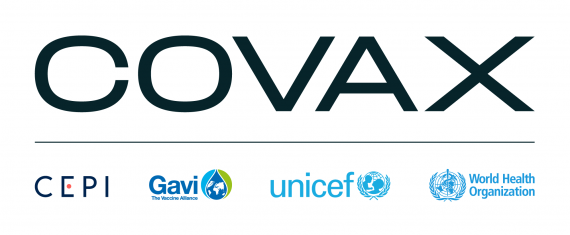
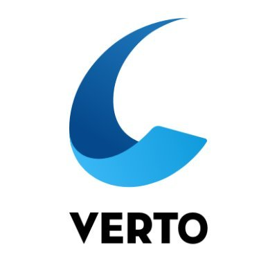

JOB DESCRIPTION
For most of May through July, I worked as IT Support at pop-up vaccine clinics across the Greater Toronto Area. My role in this position was to mainly help vaccinators and other staff with the technology used on-site including COVaxON, the management system used to record dose information of clients who received a COVID-19 vaccination in Ontario, and Verto Flow, the appointment management and scheduling system used at appointment-based clinics. I was required to be knowledgeable about how these programs worked and how each update altered their functionality so that clinics could run smoothly throughout the summer.


As Canada’s vaccination rate increased and clinics started to become less busy, I worked more of my shifts in the hospital and provided support to those who were struggling with their myHealthRecord accounts. myHealthRecord is Women’s College Hospital’s patient portal system through which patients can access their test results, create/cancel appointments, share important medical information with their primary provider, and more. I provided support regarding login issues, activating new accounts, and instructing patients on how to use their myHealthRecord account. Additionally, while working on-site I was given the opportunity to help test all of the downtime computers at the hospital, and provide support with the manual installation of a new version of the PS Suite application across all computers in the Family Practice clinic.